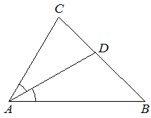

sol50
Предварительные разборы, внешнего эталона нет.
| В треугольнике угол равен — биссектриса, угол равен Найдите |  |
{
"complete": true,
"included": true,
"exclusion_reasons": [],
"author_mode": "standalone_initial",
"author_path": "raw\\author\\6709ee.json",
"auditor_path": "raw\\auditor\\6709ee.json",
"feedback_ref": null,
"source_run": "data/annotation/runs/2026-11-08-fipi-team-ThreeHundredsperSecond-50"
}{
"task_id": "6709ee",
"solution_status": "solved",
"answer": "66",
"steps": [
{
"id": "s1",
"action": "Применить определение биссектрисы внутреннего угла треугольника.",
"result": "Поскольку AD — биссектриса угла A, ∠BAD = ∠CAD = 30°, поэтому ∠A = 60°.",
"kc_ids": [
"kc1"
],
"input_refs": [
"condition"
]
},
{
"id": "s2",
"action": "Найти третий угол треугольника по сумме его внутренних углов.",
"result": "∠B = 180° − ∠A − ∠C = 180° − 60° − 54° = 66°.",
"kc_ids": [
"kc2"
],
"input_refs": [
"condition",
"s1"
]
}
],
"kc_candidates": [
{
"id": "kc1",
"name": "Вычислить угол по его половине, выделенной биссектрисой",
"description": "Если луч является биссектрисой внутреннего угла и известна величина одной из двух равных частей, получить величину всего угла удвоением этой части."
},
{
"id": "kc2",
"name": "Вычислить третий угол треугольника по двум известным",
"description": "По величинам двух внутренних углов невырожденного евклидова треугольника вычислить оставшийся угол, вычитая их сумму из 180°."
}
],
"methods": [
{
"id": "m1",
"name": "Восстановить угол по биссектрисе и применить сумму углов треугольника",
"step_ids": [
"s1",
"s2"
]
}
],
"warnings": []
}{
"task_id": "6709ee",
"catalog_version": "fipi50-editorial-v1-frozen",
"decisions": [
{
"local_kc_id": "kc1",
"status": "new_candidate",
"catalog_kc_id": null,
"evidence": [
{
"ref": "step:s1:result",
"quote": "Поскольку AD — биссектриса угла A, ∠BAD = ∠CAD = 30°, поэтому ∠A = 60°."
}
],
"context_refs": [
"condition"
],
"alternatives_checked": [
{
"catalog_kc_id": "literal_57221556b432",
"reason": "Определение направлено от заданного целого угла к двум равным частям. Здесь величина целого неизвестна: равенство частей является компонентом восстановления целого по известной половине."
},
{
"catalog_kc_id": "literal_adbf18f11761",
"reason": "Сложение углов с общей стороной покрывает получение целого из уже известных частей, но не установление величины второй части по свойству биссектрисы."
}
],
"rationale": "В s1 наблюдается единое восстановление величины угла по известной половине и заданной биссектрисе. Ни одно определение каталога не покрывает эту операцию целиком: одно задаёт деление целого, другое — сложение известных углов. Отдельное дробление удвоения как арифметики не требуется. Проверены все 144 определения; предлагается обратное по входу и результату действие, а не новый узел из-за чисел или букв.",
"proposal": {
"name": "Восстанавливать величину угла по половине, выделенной биссектрисой",
"definition": "При заданной биссектрисе угла и известной величине одной из двух частей установить равенство частей и вычислить величину всего угла удвоением известной части."
},
"blocking": false,
"issue_ids": []
},
{
"local_kc_id": "kc2",
"status": "new_candidate",
"catalog_kc_id": null,
"evidence": [
{
"ref": "step:s2:action",
"quote": "Найти третий угол треугольника по сумме его внутренних углов."
},
{
"ref": "step:s2:result",
"quote": "∠B = 180° − ∠A − ∠C = 180° − 60° − 54° = 66°."
}
],
"context_refs": [
"condition",
"step:s1:result"
],
"alternatives_checked": [
{
"catalog_kc_id": "literal_f5a787e19d0e",
"reason": "Определение соединяет сумму углов треугольника со смежностью при известных положениях лучей. В s2 используется только сумма внутренних углов, смежные углы не вводятся и не вычисляются."
},
{
"catalog_kc_id": "literal_adbf18f11761",
"reason": "Вычитание здесь основано на сумме трёх внутренних углов треугольника, а не на взаимном положении двух углов с общей стороной."
},
{
"catalog_kc_id": "linear_equation",
"reason": "Не выполняется преобразование аффинного равенства к множеству решений; непосредственно применяется геометрическое соотношение с числовым вычислением."
}
],
"rationale": "Два внутренних угла известны: 54° из условия и 60° из результата s1. s2 вычисляет третий угол вычитанием из 180°. Проверка полного каталога не обнаружила определения именно этого действия без дополнительного требования смежности; совпадение с компонентом literal_f5a787e19d0e недостаточно для полного match. Вычисление 66° корректно.",
"proposal": {
"name": "Вычислять третий внутренний угол треугольника по двум известным",
"definition": "По величинам двух внутренних углов невырожденного евклидова треугольника вычислить величину третьего как 180° минус сумма известных углов."
},
"blocking": false,
"issue_ids": []
}
],
"issues": [],
"review_scope": "KC mapping with incidental mathematical checks; not expert validation"
}[]
{
"included": true,
"exclusion_reasons": [],
"source_policy_included": true,
"source_policy_exclusion_reasons": []
}